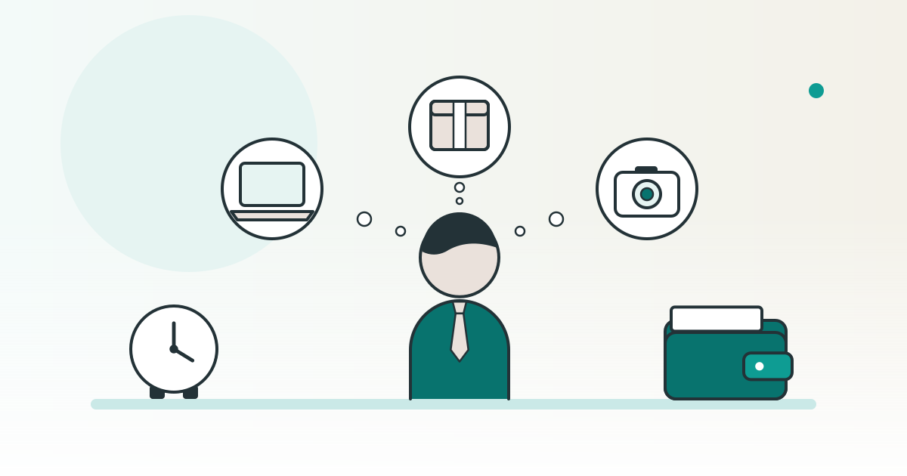

SHOPKIT コラム
副業は何がいい？会社員が続けやすい副業の選び方

副業を始めたいけれど、何が自分に合うか決められない。そんな会社員に向けて、本業や暮らしと両立できる条件を整理します。候補ごとに時間・準備費用・必要な経験を確認し、続けられる形を考えましょう。
この記事は、完成品のネットショップを販売している SHOPKIT が書いています。
副業を選ぶ前に、使える時間と支出の上限を決める
最初は、本業・家事・休む時間を予定に置き、そのほかに何を引き受けられるかを考えます。空いているように見える時間でも、連絡を受けられる時間と、集中して作業できる時間を分けてみましょう。
準備に使えるお金も、生活に必要な支払いと分けて上限を決めます。道具や教材を買う前に、何の準備に使うのか、続ける間に別の支払いがあるかを書いておくと、候補を比べやすくなります。
- 時間： 決まった日時に働けるか、締め切りまでに自分で予定を組みたいかを考えます。
- 支出： 用意する道具、学ぶ費用、場所、商品などについて、見積もりが必要な項目を並べます。
- 本業との関係： 勤務先の条件、会社の情報や道具の扱い、取引先との関係で確認したい点を整理します。
出張や繁忙期などで予定が変わる方は、受ける仕事の量を変えられるかも質問に入れましょう。「今週できるか」と「予定が変わっても対応できるか」を分けて考えます。
副業の種類を、引き受ける仕事から分けてみる
以下は、選ぶときに比べやすくするための分け方です。同じ仕事に複数の要素が重なる場合もあるので、名前だけで決めず、実際の仕事内容と条件を見ましょう。
- 時間を決めて働く： 指定された日時に仕事をする候補です。移動や準備も含めて、本業の予定と重ならないかを確かめます。
- 経験や技能を使って仕事を受ける： 文章を書く、資料を作るなど、自分ができる内容を引き受ける候補です。納品するもの、締め切り、修正への対応を聞きます。
- 商品を販売する： 商品を選び、お客さまに届ける候補です。仕入れ・問い合わせ・受け渡しのうち、自分が確認する仕事を洗い出します。
- 小さな事業を持つ： 商品やサービス、届け方を自分で決めて続ける候補です。作業に加え、契約先や支出、仕事の手順を決める役割も考えます。
ネットだけで進める副業を探す場合も、打ち合わせや返答の時間が決まっているかを確認しましょう。インターネットで募集されていることと、自分の都合だけで予定を組めることは分けて見るとよいでしょう。
関連：30代・40代、スキルなしから始める小さな事業｜一人で・家でできる選び方
続けやすさは、時間・準備費用・経験を同じ表で確かめる
どの種類が良いかを一律に決めるより、自分の条件に合うかを候補ごとに確認しましょう。表の質問を相手に聞き、募集文の説明と返答が合っているかを見比べます。
この記事は、完成品のネットショップを販売している SHOPKIT が書いています。
| 候補の形 | 時間の自由を確かめる質問 | 初期費用・支出の確認 | 経験・技能の確認 |
|---|---|---|---|
| 日時を決めて働く | 変更や休みの相談ができるか、移動や準備はいつ行うか。 | 交通・持ち物などの支払いがあるか、誰が負担するか。 | 仕事を覚えるための説明と、必要な経験は何か。 |
| 経験や技能で受ける | 締め切り・連絡・修正の日時をどう決めるか。 | 使う道具やソフト、教材に何が必要か。 | 求められる仕上がりを、見本や依頼内容で確かめられるか。 |
| 商品を販売する | 注文や問い合わせ、仕入れ・受け渡しをいつ確認するか。 | 商品代のほか、送料・決済等の費用と継続の支払いは何か。 | 商品情報の確認と、お客さまへの案内を準備できるか。 |
| 小さな事業を持つ | 自分で動く仕事と、取引先の予定に合わせる仕事は何か。 | 始める準備、続ける間、終了するときの費用は何か。 | 自分が担当する仕事と、相談先に確かめることを分けられるか。 |
この表は、候補を比べるための質問例です。時間の自由度、費用の大小、必要な技能の水準を測定した比較や順位ではありません。
返答がそろったら、自分の予定で対応できる点と、まだ分からない点を分けます。始める条件だけでなく、休みたいときや終了するときの扱いも確認しておきましょう。
すぐにお金になる話を聞いたら、契約の中身に戻る
副業の案内で、仕事内容を聞く前に教材や支援の契約を勧められたら、いったん支払う理由を整理しましょう。受け取るもの、相手が行うこと、自分が行うことを別々に書き出します。
- 追加で必要な支払いと、その条件が書面で分かるか。
- 仕事の紹介や支援について、担当する範囲と対応する期間が具体的か。
- 途中で終了したいときの連絡先と、解約・返金の条件を確認できるか。
分からない条件が残っているなら、その場で決めずに確認する時間を取りましょう。契約が自分の目的や予算に合うかも、案内の印象と分けて考えます。
契約で困ったときは、消費者ホットライン（188）で、近くの消費生活センターなどの相談窓口を案内しています。
会社員は、就業規則と確定申告の確認先を押さえる
候補を絞った段階で、仕事内容と予定を持って勤務先の窓口に確認しましょう。就業規則の該当箇所、必要な相談や届け出、本業と両立するための条件を質問にします。
厚生労働省の「副業・兼業」ページでは、ガイドラインやモデル就業規則、働く方向けの資料を案内しています。
厚生労働省の副業・兼業に関する案内も参照し、実際の勤務先で何が必要かを確かめてください。公的なモデルの説明だけで、自分の勤務先の条件を判断しないようにしましょう。
国税庁には、給与を受け取っている人のうち、確定申告をしなければならない人の条件と、その例外をまとめた案内があります。
国税庁「給与所得者で確定申告が必要な人」で最新の説明を読み、副業の内容や給与の状況を整理して、税務署や税理士に確認しましょう。この記事では個別の申告要否や税額を判断していません。
相談のために、何の仕事をして、どのように支払いを受け、何に支出する予定かをメモしておくと、説明する内容をまとめられます。契約や支払いの記録をどこに残すかも、始める前の確認項目に入れましょう。
関連：会社員が副業でネットショップを始めるには｜就業規則・時間・税金
物を売る副業なら、お店を用意する形も比べる
商品を販売する候補を選んだら、何を扱うかと、お店をどう用意するかを考えます。自分で作る形に加え、完成品のネットショップを買う形も比較できます。
SHOPKITの2026年10月15日時点のサービスページでは、副業でもお店を続けられると案内しています。
同ページでは、副業・独立開業・新規事業に使えると説明しています。
候補のお店は、サービスページのお店の一覧で確認できます。
自分の勤務先の条件に合うか、対応する仕事を予定に置けるかは、別に確かめましょう。選ぶときに作った時間・費用・経験のメモを使い、分からないことを相談してから検討を進めてください。
※ SHOPKITの副業・用途についての説明は、2026年10月15日時点のサービスページの記載です。厚生労働省・国税庁の資料は同日、消費者ホットラインの案内は2026年10月20日に確認しています。最新の勤務先の条件や税務・契約の個別の扱いは、それぞれの窓口で確かめてください。